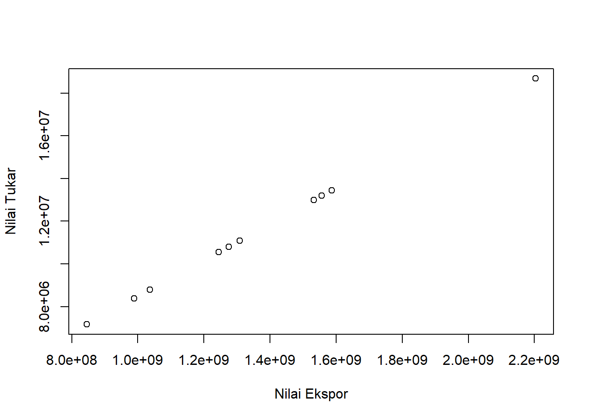
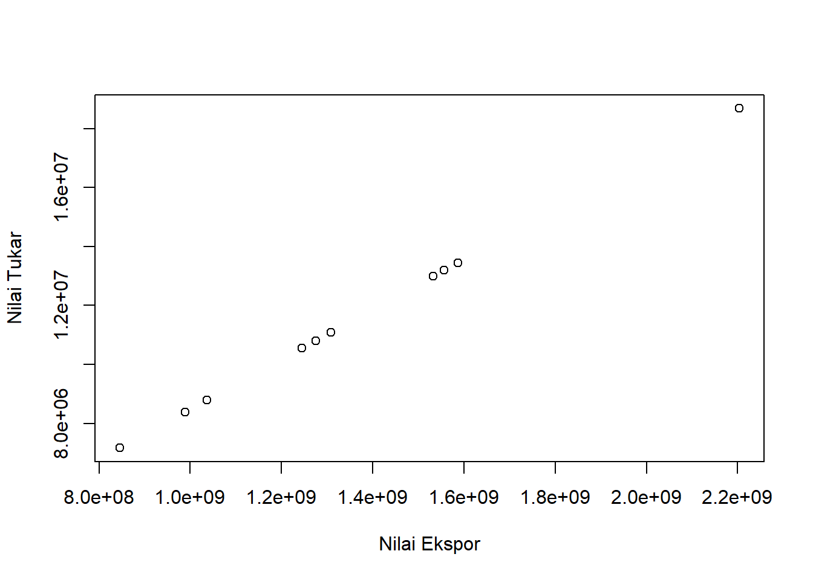
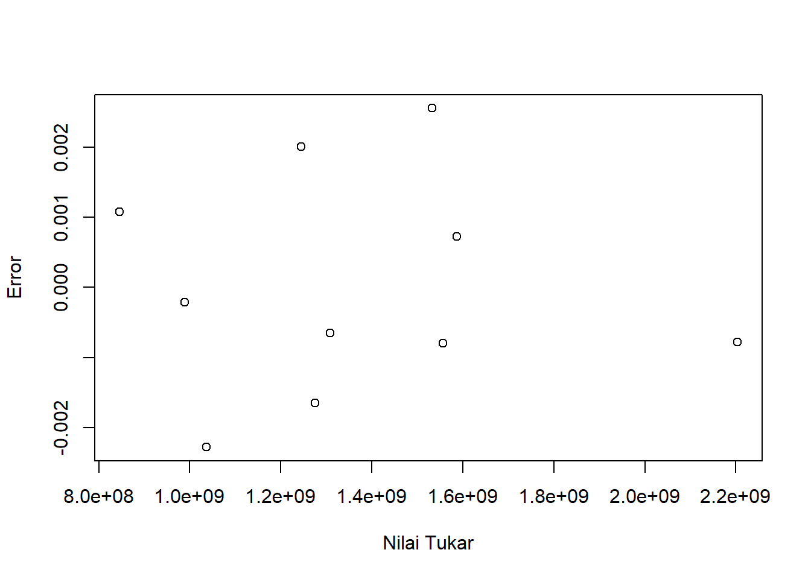

library(readxl)
dat<-read_excel('latihan.xlsx')
reg<-lm(Y~X, data=dat)
plot(dat$Y,dat$X,xlab="Nilai Ekspor",ylab="Nilai Tukar")
Metode Penelitian Politeknik APP Jakarta

Di era globalisasi, perdagangan internasional salah satu faktor penting yang berpengaruh terhadap perekonomian suatu negara. Perdagangan internasional merupakan suatu aktivitas berdagang yang dilakukan oleh dua negara yang berbeda. Perdagangan internasional terbagi menjadi dua, yaitu ekspor dan impor. Ekspor merupakan kegiatan mengeluarkan barang atau komoditas dari daerah pabean Indonesia, sedangkan Impor merupakan kegiatan memasukkan barang atau komoditas ke daerah pabean Indonesia.
Dalam perdagangan internasional, tentu harus ada kesepakatan antara 2 negara. Kesepakatan tersebut bisa dilihat dari penawaran produk, pengiriman, bahkan proses pembayaran sekalipun. Melalui perdagangan internasional, negara mendapat keuntungan dan memberikan pengaruh positif terhadap pertumbuhan ekonomi.
Kopi adalah minuman hasil biji kopi yang disangrai, kemudian dihaluskan menjadi bubuk. Kopi merupakan salah satu komoditas di dunia yang dibudidayakan lebih dari 50 negara. Dua varietas pohon kopi yang dikenal secara umum, yaitu Kopi Robusta (Coffea canephora) dan Kopi Arabika (Coffea arabica).
Indonesia adalah negara eksportir kopi terbesar ke 6 setelah Brazil, Vietnam, Kolombia, Guatemala, dan Ethiopia. Indonesia menguasai pangsa pasar kopi sebesar 2,5% di Jepang. Menurut Kementerian Perdagangan (Kemendag), Indonesia terus berupaya mendorong kinerja ekspor melalui perwakilan perdagangan RI di Jepang, yaitu Atase Perdagangan di Tokyo, Indonesian Trade Promotion Center (ITPC) di Osaka, dan Tim Ekonomi Konsulat Jenderal RI berhasil memfasilitasi kontrak ekspor produk agrikultura, yaitu kopi antara PT Arumia Kharisma dari Indonesia dengan Mirza Management Co. Ltd dari Jepang.
Penelitian ini bertujuan untuk melihat pengaruh ekspor kopi ke negara Jepang terhadap nilai tukar Rupiah pada tahun 2012-2021. Dalam penelitian ini, pengambilan data melalui subjek nilai ekspor kopi dari negara Indonesia ke negara Jepang. Data yang di ambil dari Badan Pusat Statistik (BPS), selama kurang lebih sembilan tahun terakhir (2012-2021). Kemudian data tersebut dibandingkan dengan data nilai tukar rupiah.
Dari pendahuluan yang dikemukakan oleh penulis, maka dapat ditentukan rumusan masalah, sebagai berikut :
1. Bagaimana pengaruh ekspor kopi ke negara Jepang terhadap nilai tukar Rupiah pada tahun 2012-2021?
Tujuan dari penelitian ini untuk mengetahui seberapa besar pengaruh ekspor lada kopi ke negara Jepang terhadap nilai tukar Rupiah. Manfaat yang diharapkan adalah untuk mengetahui seberapa besar pengaruh ekspor kopi terhadap nilai tukar Rupiah dan seberapa signifikan hasil penelitian ini, guna sebagai gambaran, serta acuan menetapkan kebijakan dan keputusan terhadap ekspor kopi ke negara Jepang, maupun negara lain.
Penelitian ini dengan judul “Analisis Pengaruh Ekspor Kopi Ke Negara Jepang Terhadap Nilai Tukar Rupiah Pada Tahun 2012-2021” dibuat berdasarkan fakta yang tersedia, yaitu sumber dari Badan Pusat Statistik (BPS). Komoditi kopi memiliki peran penting dalam ekspor di bagian sektor perkebunan. Menuru data Badan Pusat Statistik (2012-2021), ditemukan bahwa ekspor tertinggi kopi di tahun 2012 dengan nilai ekspor USD 145.733,9 ribu dan nilai terendah pada tahun 2020 dengan nilai ekspor USD 55.922,9 ribu. Hal tersebut, disebabkan oleh dampak COVID-19 yang mengharuskan karantina wilayah (lockdown) di berbagai negara, sehingga ekspor menjadi terhambat.
Menurut, Iman sebagai Ketua Dewan International Coffee Organization (ICO), berbagai upaya untuk meningkatkan harga kopi telah banyak dilakukan. Salah satunya dengan cara modernisasi produksi dan reformasi organisasi negara produsen kopi dunia. Strategi ini diharapkan bisa memberi nilai tambah dan memperbaiki harga jual di tengah tantangan pasar saat ini. Sebab berdasarkan data ICO per Juni 2020, harga kopi jenis arabika turun 7,6% dan kopi jenis robusta turun 13,24% dibandingkan Juni 2019. Meskipun tahun 2021, nilai ekspor kopi kembali meningkat dengan nilai ekspor USD 65.434,1 ribu, tak henti untuk melakukan strategi yang ada.
| Tahun | Nilai Ekspor (JPY) | Nilai Tukar (IDR) |
|---|---|---|
| 2012 | 18.682.940,25 | 2.203.350.258,43 |
| 2013 | 13.192.830,89 | 1.555.880.764,05 |
| 2014 | 12.993.019,93 | 1.532.316.296,98 |
| 2015 | 13.454.844,01 | 1.586.780.968,62 |
| 2016 | 11.089.790,4 | 1.307.861.194,05 |
| 2017 | 10.558.687,58 | 1.245.226.216,9 |
| 2018 | 10.809.701,22 | 1.274.829.210,92 |
| 2019 | 8.784.515,98 | 1.035.991.406,9 |
| 2020 | 7.169.259,86 | 845.498.104,36 |
| 2021 | 8.388.586,19 | 989.297.899,7 |
Sumber Data: Badan Pusat Statistik (BPS)
library(readxl)
dat<-read_excel('latihan.xlsx')
reg<-lm(Y~X, data=dat)
plot(dat$Y,dat$X,xlab="Nilai Ekspor",ylab="Nilai Tukar")
library(readxl)
dat<-read_excel('latihan.xlsx')
reg<-lm(Y~X, data=dat)
dat$u<-resid(reg)
plot(dat$Y,dat$u,xlab="Nilai Tukar",ylab="Error")
Metode analisis yang digunakan, yaitu teknik kuantitatif dan penjabaran deskriptif. Teknik analisis kuantitatif merupakan analisis yang dilakukan berbarengan dengan perhitungan angka. Lalu, faktornya mempengaruhi indeks nilai tukar rupiah terhadap nilai ekspor kopi ke Jepang. Dalam metode kuantitatif yang dipilih adalah regresi univariat atau Ordinary Least Square (OLS) dengan 1 variabel independen. Penelitian ini mencari hubungan antara nilai ekspor dan nilai tukar. Spesifikasi yang dilakukan adalah:
Dimana: Yt adalah nilai tukar Yen (Jepang) terhadap mata uang negara USD dan Rupiah; β0 adalah koefisien konstanta; β1 adalah parameter; Xt adalah nilai ekspor, dan μi adalah error term
\[ y_{t}=\beta_0 + \beta_1 x_t+\mu_t \] di mana \(y_t\) adalah hwy dan \(x_t\) adalah cty.
| Variabel | Coeficient | Std. Error | T. Value | Prob |
|---|---|---|---|---|
| Intercept | -5.420e-03 | 1.992e-03 | -2.721e+00 | 0.0262 |
| X | 1.179e+02 | 1.670e-10 | 7.063e+11 | <2e-16 |
| R-Squared | 1 |
| Adjusted R-Squared | 1 |
| F-Statistic | 4.989e+23 |
| Prob (F-Statistic) | <2.2e-16 |
Ekspor kopi sangat berpengaruh terhadap nilai tukar. Dapat dilihat pada hasil probabilitas X (Nilai Ekspor) memiliki bintang tiga atau dengan kata lain signifikan. Berarti nilai ekspor sering menjadi faktor utama untuk mendorong naik dan turunnya suatu kurs mata uang suatu negara. Nilai koefisien ekspor sebesar 1.179e+02 yang berarti kenaikan perubahan nilai ekspor berpengaruh terhadap nilai kurs rupiah terhadap JPY. Dari hasil ini, maka dapat di simpulkan, bahwa pendapatan ekspor berpengaruh positif terhadap nilai tukar rupiah.
Berikut hasil regresi:
library(readxl)
dat<-read_excel("latihan.xlsx")
reg<-lm(Y~X,data=dat)
summary(reg)
Call:
lm(formula = Y ~ X, data = dat)
Residuals:
Min 1Q Median 3Q Max
-0.0022758 -0.0007888 -0.0004330 0.0009907 0.0025521
Coefficients:
Estimate Std. Error t value Pr(>|t|)
(Intercept) -5.420e-03 1.992e-03 -2.721e+00 0.0262 *
X 1.179e+02 1.670e-10 7.063e+11 <2e-16 ***
---
Signif. codes: 0 '***' 0.001 '**' 0.01 '*' 0.05 '.' 0.1 ' ' 1
Residual standard error: 0.001652 on 8 degrees of freedom
Multiple R-squared: 1, Adjusted R-squared: 1
F-statistic: 4.989e+23 on 1 and 8 DF, p-value: < 2.2e-16Berdasarkan dari keseluruhan data, analisis kuantitatif yang dilakukan, serta pengamatan terhadap nilai ekspor kopi ke negara Jepang, hasilnya adalah sangat berpengaruh positif dan signifikan terhadap nilai tukar rupiah. Seperti yang diketahui, bahwa Indonesia merupakan negara eksportir kopi terbesar ke 6 dan Indonesia juga menguasai pangsa pasar kopi sebesar 2,5% di Jepang. Oleh sebab itu, ekspor kopi ke negara Jepang harus terus dipertahankan, bahkan ditingkatkan agar nilai tersebut tidak menurun.
Badan Pusat Statistik. (n.d.). Retrieved January 19, 2023, from https://www.bps.go.id/statictable/2014/09/08/1014/ekspor-kopi-menurut-negara-tujuan-utama-2000-2021.html
Mata uang usd ke yen. (n.d.). Bing. Retrieved January 20, 2023, from https://snr.koreasouth.binguxlivesite.net:9943/search?q=mata+uang+usd+ke+yen&cvid=8c4cee97de9b474b9d3614e57248fb28&aqs=edge..69i57j0l8.8005j0j9&FORM=ANAB01&PC=ASTS
Ekspor Produk Kopi dan Kakao ke Jepang Terus Diddorong | Neraca.co.id. (n.d.). Retrieved January 20, 2023, from https://www.neraca.co.id/article/144962/ekspor-produk-kopi-dan-kakao-ke-jepang-terus-diddorong
Genjot Ekspor Kopi Indonesia ke Jepang, Dubes Heri Jadi Barista di Acara Coffee with the Ambassador. (n.d.). Retrieved January 20, 2023, from https://kemlu.go.id/tokyo/id/news/17564/genjot-ekspor-kopi-indonesia-ke-jepang-dubes-heri-jadi-barista-di-acara-coffee-with-the-ambassador
Pandemi Corona Tekan Ekspor dan Harga Kopi Dunia—Perdagangan Katadata.co.id. (2020, August 5). https://katadata.co.id/ekarina/berita/5f2a720a3af7e/pandemi-corona-tekan-ekspor-dan-harga-kopi-dunia